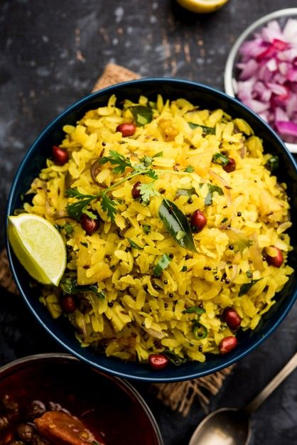

Poha — Soft, Tangy & Fragrant

This style of Poha is made with well-washed, soft flattened rice, tempered with mustard, curry leaves and cashews, finished with a splash of lemon and fresh coriander. Light, wholesome and full of homely flavours.
Ingredients
Main
- 2 cups poha (flattened rice) — thick variety
- 1 medium onion, finely chopped
- 1–2 green chillies, chopped (adjust to taste)
- 1 small potato (optional), diced & shallow fried
- ½ cup roasted peanuts or cashews
Tempering & Flavours
- 2 tbsp oil or ghee
- 1 tsp mustard seeds
- 1 tsp urad dal (split black gram) — optional
- 8–10 curry leaves
- ½ tsp turmeric powder
- Salt to taste
- Juice of 1 lemon
- Fresh coriander (cilantro), chopped
- 2 tbsp sugar (optional, for balance)
Method — Step by Step
Place poha in a sieve or colander and rinse gently under running water for 10–20 seconds until softened. Let it drain well for 2–3 minutes. Fluff gently with a fork and set aside.
Heat oil or ghee in a pan. Add mustard seeds and let them splutter. Add urad dal (if using) and fry until light golden. Add curry leaves, green chillies and chopped onion. Sauté until onion turns translucent.
If using potatoes, add the diced, lightly fried potato pieces. Add roasted peanuts or cashews and toss for a minute.
Add turmeric and salt. Mix well. Add the drained poha and gently combine, ensuring the tempering coats the poha evenly. Sprinkle sugar (if using) and mix. Cook on low heat for 1–2 minutes to warm through.
Turn off the heat. Add lemon juice and chopped coriander. Toss gently. Serve hot with extra lemon wedges and a side of chai or yoghurt.
Chef’s Notes — Central India Touch
- In many Indian homes, a pinch of sugar is added to balance the lemon.
- Curry leaves and roasted peanuts are essential for authentic aroma and texture.
- Use thick poha variety — it holds shape and gives the right bite.